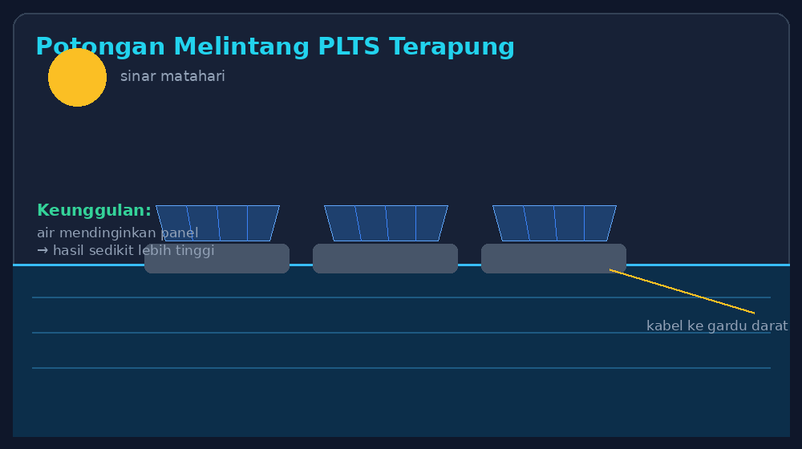

PLTS Terapung: Cara Kerja, Keunggulan, dan Tantangan Nyatanya
Diperbarui 17 November 2026 | Waktu baca: 8 menit
PLTS terapung (floating solar) adalah pembangkit surya yang dipasang di atas permukaan air — waduk, danau, atau kolam besar — dengan panel yang diletakkan di atas ponton mengapung, lalu disalurkan ke darat melalui kabel bawah air.
Sekilas hanya soal “memindahkan panel ke air”. Kenyataannya ada alasan teknis yang membuat pendekatan ini menarik, dan alasan teknis lain yang membuatnya tidak bisa dipakai di sembarang tempat.
Bagaimana bentuknya

Komponen utamanya:
- • Ponton (floater) — rakit HDPE yang menopang panel dan menjaga tetap kering.
- • Sistem jangkar — tali dan pemberat yang menahan rakit agar tidak bergeser mengikuti angin maupun naik-turunnya air.
- • Kabel bawah air — menyalurkan listrik ke gardu di tepi, lalu ke jaringan.
- • Jalur servis — akses untuk pembersihan panel dan pemeriksaan sambungan, biasanya berupa rakit khusus atau perahu.
Kenapa hasilnya sedikit lebih tinggi
Panel surya bekerja lebih baik saat sejuk. Di atap atau lahan terbuka, panel bisa memanas jauh di atas suhu udara, dan daya keluarannya turun ketika suhu sel naik. Di atas air, penguapan membantu mendinginkan permukaan panel, sehingga pada kondisi cuaca yang sama hasil PLTS terapung umumnya sedikit lebih tinggi daripada PLTS darat.
Keuntungan kedua: airnya juga ikut tertutup sebagian. Area yang tertutup panel mengurangi penguapan waduk — bermanfaat untuk waduk yang dipakai mengairi sawah atau pembangkit listrik tenaga air.
Keuntungan ketiga, dan ini yang paling praktis di Indonesia: tidak perlu membebaskan lahan. Persoalan lahan adalah salah satu hambatan terberat proyek surya skala besar; di atas waduk, persoalan itu berubah menjadi persoalan izin pemanfaatan badan air.
Contoh nyata di Indonesia
Proyek PLTS terapung Cirata di Jawa Barat berkapasitas sekitar 192 MWp — salah satu yang terbesar di kawasan Asia Tenggara — menempati sebagian kecil dari luas waduknya. Yang menarik dari lokasinya: pembangkit ini terhubung ke sistem kelistrikan yang sudah ada karena dibangun di kawasan PLTA. Infrastruktur yang sudah tersedia itulah yang membuat proyek sebesar itu lebih cepat berdiri dibanding harus membangun jaringan dari nol.
Model inilah yang kemudian banyak dibicarakan untuk waduk-waduk lain, karena pola “PLTS + PLTA” saling melengkapi: PLTA bisa menutup kekurangan saat matahari tidak bersinar, dan PLTS menghemat air waduk pada siang hari.
Tantangan yang tidak terlihat dari foto
- • Fluktuasi tinggi air. Waduk bisa naik-turun beberapa meter antara musim hujan dan kemarau. Sistem jangkar harus dirancang untuk rentang itu, bukan untuk satu ketinggian tertentu.
- • Sedimen dan sampah. Aliran sungai membawa lumpur dan sampah; keduanya bisa menumpuk di sekitar ponton dan mengganggu pergerakan rakit.
- • Perawatan lebih rumit. Membersihkan panel di atas rakit membutuhkan akses perahu dan prosedur keselamatan kerja di air — biaya operasionalnya lebih tinggi daripada membersihkan panel atap.
- • Kualitas air dan ekologi. Menutup sebagian permukaan air mengurangi masuknya sinar matahari dan oksigen. Porsi area yang boleh ditutup harus dikaji agar tidak merusak kehidupan air dan kualitas air baku.
- • Biaya awal lebih tinggi. Struktur apung, jangkar, dan kabel bawah air membuat investasi awalnya lebih besar dibanding PLTS darat pada kapasitas yang sama.
Apakah relevan untuk rumah tangga?
Untuk rumah tangga, PLTS terapung praktis tidak relevan — kecuali untuk kolam besar atau tambak. Tapi dampaknya terasa tidak langsung: kapasitas besar dari PLTS terapung menambah pasokan listrik siang hari, dan itu mengurangi tekanan pada jaringan.
Yang bisa ditiru konsepnya adalah pemikiran yang sama: manfaatkan permukaan yang sudah ada. Untuk rumah, permukaan itu adalah atap. Sebelum memasang, hitung kebutuhan rumah dengan kalkulator DEBATRE — daya alat, jam pemakaian, tegangan sistem, dan kondisi cuaca di lokasi — supaya kapasitasnya pas, bukan sekadar mengikuti ukuran yang dijual murah.
Kesimpulan: PLTS terapung menawarkan jalan keluar dari masalah lahan, dengan bonus hasil yang sedikit lebih tinggi karena pendinginan alami dan pengurangan penguapan air. Harganya: struktur apung dan jangkar yang lebih rumit, perawatan yang lebih sulit, serta kajian ekologi yang tidak bisa dilewati. Di Indonesia, Cirata menunjukkan modelnya bisa berjalan — dengan memanfaatkan infrastruktur kelistrikan yang sudah ada.
Sumber & rujukan
- • PLN — informasi proyek PLTS Terapung Cirata — pln.co.id
- • Kementerian ESDM — kebijakan dan proyek PLTS terapung nasional — esdm.go.id
- • World Bank — kajian PLTS terapung (potensi, biaya, dan dampak lingkungan) — worldbank.org
- • IRENA — laporan teknologi dan biaya PLTS terapung — irena.org
Angka kapasitas proyek dapat berubah mengikuti tahap pengembangan. Nilai manfaat pendinginan bersifat umum dan bergantung kondisi lokal, bukan angka tetap.